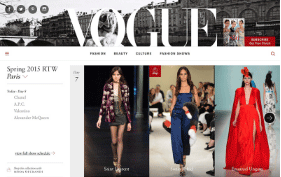
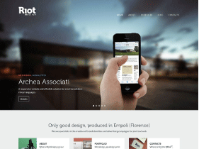
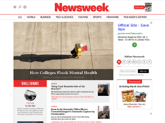
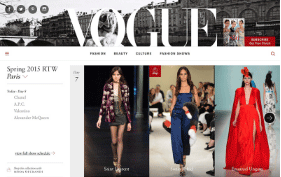
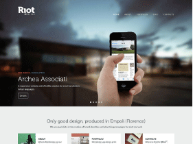
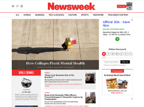
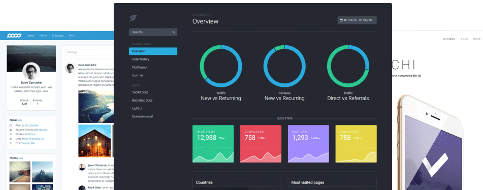
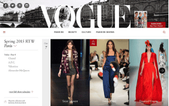
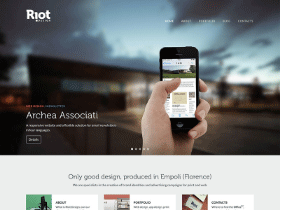
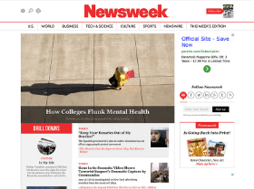

基于 Bootstrap 构建的网站
全球数以百万计的网站都是基于 Bootstrap 构建的。你可以先参观一下我们提供的 实例代码 或者看一看我们粉丝的网站吧。
 





我们在“优站精选”里展示了许多精美的 Bootstrap 网站。
将 Bootstrap 的 CSS 和 JS 引入项目中即可使用。同时支持多种方式获取Bootstrap，你可以使用你所喜欢的包管理器、或者下载源码、或者使用Bootstrap CDN。
通过 Bower、Composer、Meteor 或者 npm 可以下载 Bootstrap 的 Sass 和 JavaScript 源码。以安装包的形式提供的文件不包含文档，Gruntfile 和 readme 文件包含的。
如果你只是需要使用 Bootstrap 的 CSS 和 JS 文件，那么使用由 Max CDN 赞助的 Bootstrap CDN 是最快的方式。
暂时不可用，请稍后再过来看看吧！
需要更简单的方式吗? 我们还提供了 定制话 Bootstrap 的 CSS 和 JS 文件。
Bootstrap 让前端开发更快速、简单。所有开发者都能快速上手、所有设备都可以适配、所有项目都适用。
Bootstrap 提供了可以直接使用的 CSS 文件，不过，Bootstrap 的源码是用 Sass 开发的，Sass 是一个流行的 CSS 预处理器。如需快速上手可以直接使用编译好的 CSS 文件，或者你也可以自己编译源码。
Bootstrap 提供了可以直接使用的 CSS 文件，不过，Bootstrap 的源码是用 Sass 开发的，Sass 是一个流行的 CSS 预处理器。如需快速上手可以直接使用编译好的 CSS 文件，或者你也可以自己编译源码。
Bootstrap 提供了可以直接使用的 CSS 文件，不过，Bootstrap 的源码是用 Sass 开发的，Sass 是一个流行的 CSS 预处理器。如需快速上手可以直接使用编译好的 CSS 文件，或者你也可以自己编译源码。
Bootstrap 是完全开源的！ 它的代码托管、开发、维护都依赖 GitHub 平台。
Bootstrap 官方高级主题带你进入新的层级。每个主题自己就是一个工具包，包含了 所有 Bootstrap 功能、全新的组件和插件、完整的文档、构建工具等。
全球数以百万计的网站都是基于 Bootstrap 构建的。你可以先参观一下我们提供的 实例代码 或者看一看我们粉丝的网站吧。



我们在“优站精选”里展示了许多精美的 Bootstrap 网站。